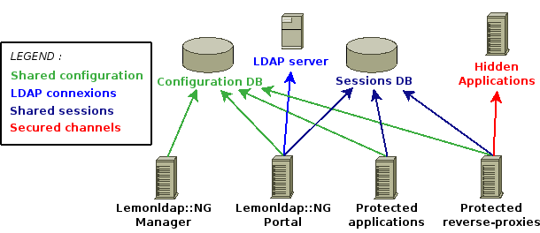
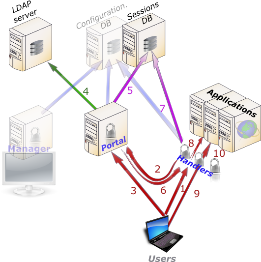

LemonLDAP::NG
Lemonldap::NG est un Web-SSO modulaire basé sur les modules Apache::Session. Il simplifie la construction d'une aire protégée en minimisant les impacts sur les applications. Il gère à la fois les authentifications et les autorisations et fournit des en-têtes HTTP pour la traçabilité. On obtient ainsi une protection AAA complete (Authentication, Authorization and Accounting) des espaces web. Lemonldap::NG est une réécriture complète de Lemonldap (voir les différences). Tous les éléments nécessaires à son exploitation et son administration sont fournis dans le package. En revanche les composants développés pour Lemonldap ne sont pas compatibles avec Lemonldap::NG.- Architecture
- Cinématique
- Mécanismes d'authentification, d'autorisation et de traçabilité
- Installation
- Système de stockage des sessions
- Auteur
- Copyright et license
Architecture
Lemonldap::NG est composé de 3 éléments s'appuyant sur 3 bases de données :
Composants de Lemonldap::NG :- le Manager permet de gérer la configuration de Lemonldap::NG,
- le portail est l'élément d'authentification des utilisateurs,
- et enfin, des modules Apache protègent les applications. Ces derniers peuvent protéger une aire d'un serveur Apache qui peut être un reverse-proxy. Dans ce dernier cas, il est recommandé de sécuriser le lien entre le reverse-proxy et le serveur masqué car l'accès direct à ce serveur peut se faire sans authentification. Un simple .htaccess ou un échange de certificats peuvent convenir suivant le niveau de sécurité du réseau hôte.
- la base de configuration : par défaut, il s'agit d'un simple répertoire, mais on peut utiliser une base de donnée pour permettre le fonctionnement si tous les éléments ne se trouvent pas sur le même serveur,
- l'annuaire LDAP : outre les authentifications (qui peuvent être effectuées par un autre moyen), il est utilisé pour récupérer les caractéristiques de l'utilisateur et calculer ses droits,
- la base des sessions : Lemonldap::NG utilise les modules Apache::Session pour gérer les sessions. Par défaut, c'est le module Apache::Session::File qui est utilisé et donc cette base est un simple répertoire. En utilisant Apache::Session::MySQL par exemple, la base devient accessible au travers du réseau permettant le déploiement de la solution sur plusieurs serveurs.
Cinématique

Détail du fonctionnement :- 1 et 2 : l'utilisateur non authentifié (c'est à dire ne présentant pas un cookie valide) est redirigé vers le portail d'authentification,
- 3 : requête d'authentification de l'utilisateur (login et mot-de-passe validé sur l'annuaire LDAP ou autre mécanisme),
- 4 : récupération des attributs de l'utilisateur,
- 5 : calcul des attributs supplémentaires demandé dans la configuration (macros et groupes) et stockage des données utilisateur dans la base de données des sessions,
- 6 : génération du cookie et redirection vers l'URL demandée initialement,
- 7 : interception du cookie par l'agent de protection (module Apache) et récupération des données utilisateur,
- 8 : vérification de l'autorisation d'accès à l'URL demandée et transmission à l'application (application directement installée sur le serveur Apache ou reverse-proxy) si l'utilisateur y est autorisé,
- 9 et 10 : les autres requêtes sont traitées directement avec les données utilisateur en cache. Le droit d'accès est calculé pour chaque URL,
Mécanismes d'authentification, d'autorisation et de traçabilité
Tous les paramètres abordés dans ce chapître sont accessibles via l'interface d'administration (voir la démonstration).Authentification
Si un utilisateur n'est pas encore authentifié et tente de se connecter à une aire protégée par un agent Lemonldap::NG, il est redirigé vers le portail. Celui-ci authentifie l'utilisateur par défaut par une connexion LDAP, mais vous pouvez également utiliser un autre schéma tel les certificats x509 (voir Lemonldap::NG::Portal::AuthSSL(3)). Lemonldap::NG utilise les cookies de session générés par le module Apache::Session soit aussi sécurisé que n'importe quelle système basé sur des cookies aléatoires de 128 bits. Il est recommandé d'activer l'option "cookie sécurisé" pour éviter les vols de session: le cookie n'est plus autorisé à circuler en dehors de connexions chiffrées (https). Par défaut, une session reste 10 minutes dans le magasin local du serveur Apache, donc dans le pire des cas, un utilisateur conserve son autorisation au plus 10 minutes après avoir perdu ses droits suite à un changement de configuration.Autorisation
Les autorisations sont contrôlées seulement par les agents protégeant les applications. En effet, le portail ne peut connaître à l'avance les applications sur lesquels l'utilisateur se connectera. En configurant votre Web-SSO, vous devez:- choisir les attributs LDAP que vous souhaitez utiliser pour les autorisations et la traçabilité,
- créer d'éventuelles expressions Perl pour définir des groupes d'utilisateur (en utilisant les attributs LDAP),
- créer des règles d'accès associant des expressions régulières triant les URL à des expressions Perl calculant le droit d'accès correspondant.
- Variables exportées (attributs LDAP):
# Nom-choisi => attribut LDAP cn => cn departmentUID => departmentUID login => uid
- Groupes d'utilisateurs :
# Nom-choisi => définition du groupe
group1 => { $departmentUID eq "unit1" or $login = "user1" }
- Protection d'un site web: chaque VirtualHost (ou hôte
réel) Apache dispose de ses propres règles d'accès:
- www1.domain.com :
^/protected/.*$ => $groups =~ /bgroup1b/ default => accept
- www2.domain.com :
^/site/.*$ => $uid eq "admin" or $groups =~ /bgroup2b/ ^/(js|css) => accept default => deny
Performances
Vous pouvez utiliser des expressions Perl aussi complexe que nécessaire et vous pouvez utiliser tous les attibuts LDAP (et créer vos propres attributs additionnels avec le mécanisme des macros) dans les définitions de groupes, les règles d'accès et les en-têtes HTTP personnalisés: vous devez seulement utiliser le nom choisi précédé d'un "$". Vous devez toutefois bien choisir vos expressions:- les groupes et les macros ne sont évaluées que lorsque l'utilisateur est renvoyé vers le portail,
- les règles d'accès et les en-têtes exportés sont évalués à chaque requête sur un site protégé.
^/protected/.*$ => $groups =~ /bgroup1b/
group1 => (|(uid=xavier.guimard)(ou=unit1)) group1 => <uid eq "xavier.guimard" or $ou eq "unit1"> group1 => (|(uid=xavier.guimard)<ou eq "unit1">)
Traçabilité
Tracer les accès au portail
Lemonldap::NG::Portal n'enregistre pas les événements de connexion par défaut, mais il est très facile de surcharger la méthode "log".Tracer les accès aux applications
Comme un Web-SSO ne peut interpréter le contenu des requêtes HTTP transmise aux applications protégées, il ne peut enregistrer au mieux que les URL. Et comme Apache le fait parfaitement, Lemonldap::NG::Handler(3) lui fournit le nom à enregistrer dans les journaux. Le paramètre optionnel "whatToTrace" indique la variable à utiliser ($uid par défaut). La trace réelle doit être effectuée par l'application seule capable d'interpréter le résultat des transactions. Lemonldap::NG peut exporter des en-têtes HTTP aussi bien en utilisant Apache en reverse-proxy qu'en protégent directement les applications. Par défaut, le champ Auth-User est utilisé mais vous pouvez choisir les en-têtes que vous transmettez à chaque application séparemment. Les expressions définissant les en-têtes associent :- le nom d'en-tête,
- une expression Perl utilisant les données de l'utilisateur (attributs, macros et groupes).
- www1.domain.com :
Auth-User => $uid Unit => $ou
- www2.domain.com :
Authorization => "Basic ".encode_base64($employeeNumber.":dummy") Remote-IP => $ip
Installation
Attention :- Lemonldap::NG est un projet différent de Lemonldap et contient tous les éléments nécessaires à son utilisation et son administration. Ainsi les logiciels tel le module webmin de Lemonldap ne fonctionnent pas avec Lemonldap::NG.
- L'agent de protection Apache ("handler") fonctionne à la fois avec les versions 1.3 et 2.x d'Apache, c'est à dire avec les versions 1 et 2 de mod_perl (mais pas avec mod_perl 1.99). Le portail et le l'interface d'administration ("manager") sont de simples CGI et peuvent donc fonctionner sur n'importe quel serveur compatible.
- La configuration de Lemonldap::NG ne doit être éditée qu'avec l'interface d'administration à moins que vous ne sachiez exactement ce que vous faites. Les paramètres présentés dans ce document sont tous accessibles dans l'arbre de configuration.
Système de stockage des sessions
Lemonldap::NG utilise 3 niveaux de cache pour les données des utilisateurs authentifiés :- un module Apache::Session::* au choix utilisé par le portail lemonldap::NG::Portal pour stocker les données après authentification,
- un module Cache::Cache* au choix utilisé par l'agent Lemonldap::NG::Handler pour partager les données entre les threads et les processus d'Apache et bien sur entre les hôtes virtuels hébergés sur le même serveur,
- les variables internes à l'agent Lemonldap::NG::Handler : si le même utilisateur utilise de nouveau le même thread ou processus, aucune requête n'est nécessaire pour calculer le droit d'accès. Ceci est particulièrement intéressant avec le système de connexions persistantes du protocole HTTP/1.1 (Keep-Alive).